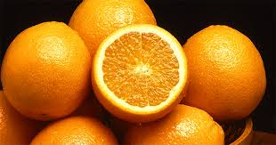

Orange
Orange, any of several species of small trees or shrubs of the genus Citrus of the family Rutaceae and their nearly round fruits, which have leathery and oily rinds and edible, juicy inner flesh. A number of species and varieties of orange are economically important, namely the China orange, also called the sweet, or common, orange (Citrus ×sinensis); the mandarin orange (C. reticulata), some varieties of which are called tangerines; and the sour, or Seville, orange (C. ×aurantium), which is less extensively grown.
Apple

Apple, (Malus domestica), fruit of the domesticated tree Malus domestica (family Rosaceae), one of the most widely cultivated tree fruits. The apple is a pome (fleshy) fruit, in which the ripened ovary and surrounding tissue both become fleshy and edible. The apple flower of most varieties requires cross-pollination for fertilization. When harvested, apples are usually roundish, 5–10 cm (2–4 inches) in diameter, and some shade of red, green, or yellow in colour; they vary in size, shape, and acidity depending on the variety.